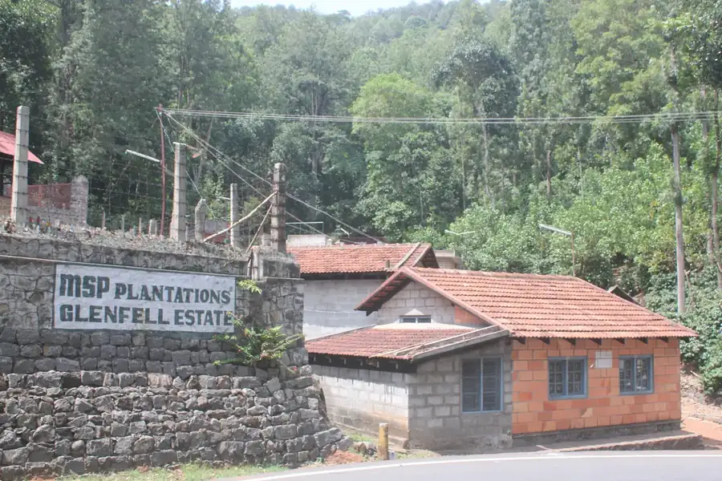

Yercaud, Tamil Nadu
Experience coffee at the source.
You can buy Arabica from a hundred brands. You cannot walk their plantation, watch the mill run, and drink the coffee standing on the ground it grew on.
The Coffee Experience Tour
Follow a coffee bean from plant to cup.
A guided tour of a 150-year-old working estate — scenic peaks, valleys and lakes, and every stage of coffee making still happening around you. The first estate in India to open its full process to visitors.
- 75minutes
- 1867estate founded
- 4,600feet up
What you'll see
Seven stops, one bean.
Walk the plantation
Through working blocks of Arabica under two tiers of shade, on all-weather roads.
See the wet mill
Where cherry is pulped, fermented and washed — the same day it comes off the tree.
Stand on the drying terraces
Acres of concrete where parchment is sun-dried and turned by hand.
Watch the dry mill
Where the parchment skin comes off and the green bean is graded.
Smell the roasting room
Small-batch roasting and grinding, on the estate.
Visit the estate museum
Documents, implements and photographs going back to the 1800s.
Finish with a tasting
At the estate café, looking out over the nursery.
Before you visit
The practical part.
- Where
- Cauvery Peak Estate, MSP Plantations, Yercaud, Tamil Nadu 636602. 15 km from Yercaud town on a well-paved road.
- How long
- About 75 minutes, at an unhurried pace.
- Getting around
- You travel the estate in your own vehicle, on all-weather roads, with a coffee guide alongside.
- Parking
- On site, at the estate café.
- Facilities
- Well-appointed rest rooms, and the café for coffee and retail.
- Best time to visit
- Harvest runs through the cool months, when the mills are working and the terraces are full.
- What to wear
- Closed shoes. It is a working plantation on a hillside, and the ground can be wet.
- Bringing children
- Families are welcome — it is an easy walk, not a hike.
Book
Come and see where your coffee begins.
Tours run from the estate café. Message us to pick a date and time.